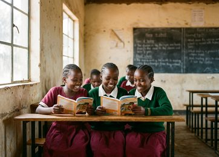
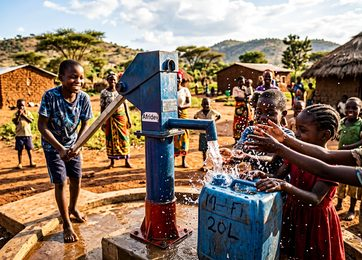
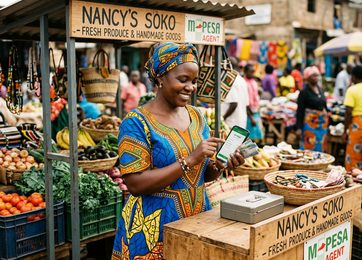
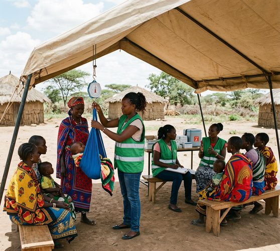
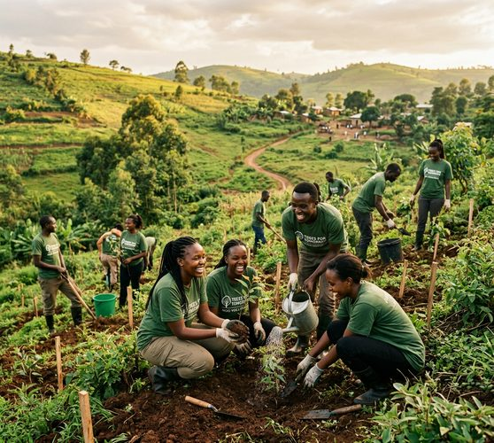

Ubuntu House, 4th Floor, Riverside Drive, Westlands, Nairobi, Kenya
hello@ubunturising.org
Every programme has a published unit cost, an East African lead, a community committee that can veto it, and an exit plan. Here is each one in full.
We pay school fees, buy uniforms and books, fund sanitary care, and employ 112 community teachers in schools that the government has not been able to staff. Scholars are selected by a community panel, not by us, against published criteria.
Each scholar is matched with a local mentor who sees them monthly. Our secondary completion rate for sponsored girls is 91 per cent, against a regional average of 58 per cent.

Solar-powered boreholes, spring protection, rainwater harvesting at schools and household latrine subsidies. Every installation is handed to an elected water committee that collects a small monthly tariff and holds a maintenance account we seed for three years.
We learned this the hard way: our first borehole in Siaya failed within nine months because nobody owned the repairs. Of the 96 water points we have built since, 94 are still functioning.

Village savings and loan associations, twelve-week business training, and start-up grants for members ready to trade full time. Groups are run entirely by their members; our staff train the first cohort and then step back.
Across 190 groups in Kenya, Uganda and Tanzania, members have saved the equivalent of KES 61 million of their own money — roughly four times what we have put in.

Eleven mobile clinics running fixed monthly routes, staffed by trained community health volunteers and a visiting clinical officer. Antenatal care, immunisation, growth monitoring, malaria testing and referral.
The clinical work is routine. The thing that made it work was turning up on the same day of the month, without fail, for two years.

Paid six-month fellowships for 240 young East Africans running reforestation, soil restoration and clean cookstove projects in their own districts. Fellows design the project; we fund it and hold them to the numbers.
Our first cohort’s seedling survival rate was 34 per cent. We changed species selection, moved planting to the long rains and paid for two years of watering. It is now 71 per cent.

KES 2,500 keeps a girl in school for a term. KES 180,000 gives a village a borehole that lasts a generation. Whatever you give, you will see exactly where it lands.